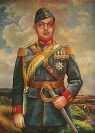

NETAJI SHUBHASHCCHANDRA BOSE

Netaji Subhas Chandra Bose was a remarkable leader in India's struggle
for independence from British rule. Born in 1897, he was known for his
fiery determination and unwavering commitment to freeing India from
colonial oppression. Netaji was a charismatic figure who inspired
millions with his patriotism and vision for a free and united India.

From a young age, Subhas Chandra Bose displayed leadership qualities and
a passion for social justice. He became involved in the Indian National
Congress and later founded the Forward Bloc, advocating for complete
independence from British rule. Netaji's famous slogan "Give me blood,
and I shall give you freedom" stirred the hearts of many Indians,
motivating them to join the freedom struggle.

One of the most iconic moments in Netaji's life was his formation of
the Indian National Army (INA) during World War II. He believed that
by aligning with the Axis powers, he could secure support for India's
independence. Despite facing challenges and setbacks, Netaji's
determination never wavered. His legacy continues to inspire
generations of Indians to strive for freedom, justice, and equality.